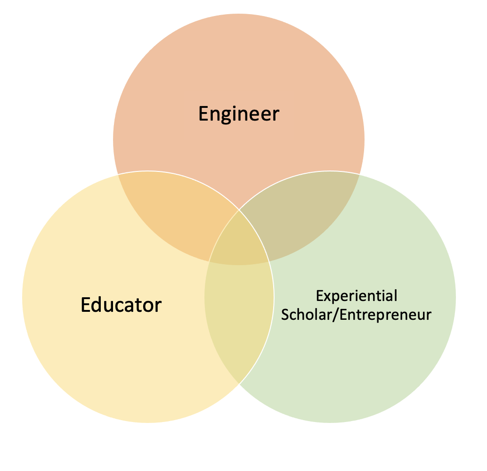

My journey at the University of Washington began in 2012, when I arrived in Seattle from Dubai to study Molecular Biology. I was 17, in a different country and masked nervousness with excitement. Almost a decade later, I am an engineer and still abuzz with excitement. However, my nervousness has been replaced by a confidence in myself that has been cultivated through a vibrant mosaic of UW experiences.
My Husky experience has solidified my identity and values. It has provided me with countless opportunities to learn, fail, grow and reflect on how can I contribute to the world. Upon graduation, I will not only possess invaluable professional skills, but more importantly, I will have a trove of incredible relationships for the rest of my life. The UW has shaped me into the person I am today and I am grateful to have been a part of the UW community and partake in everything it has to offer.
Identities
In addition to identifying as a heterosexual woman of color, my Husky experiences have added depth to who I perceive myself to be. Therefore, I also identify as an:

Engineer
The UW has trained me to be confident in my skills as an engineer. Through my education, I feel comfortable navigating a highly technical field and addressing pressing challenges pertinent to the world.
Educator
UW has given me various opportunities to give back as an educator. Upon reflecting on my student and educator experiences, I have recognized that empathy, evidence and community are the main tenants of my teaching philosophy.
Entrepreneur
Always looking to create impact, I have always gravitated towards entrepreneurial experiences. UW's innovative spirit has evoked in me a deep fascination with the process of innovation and entrepreneurship, inspires my graduate research work.
Values
All of the above elements of my identity are driven by three core values, which I have identified during the course of my UW journey.